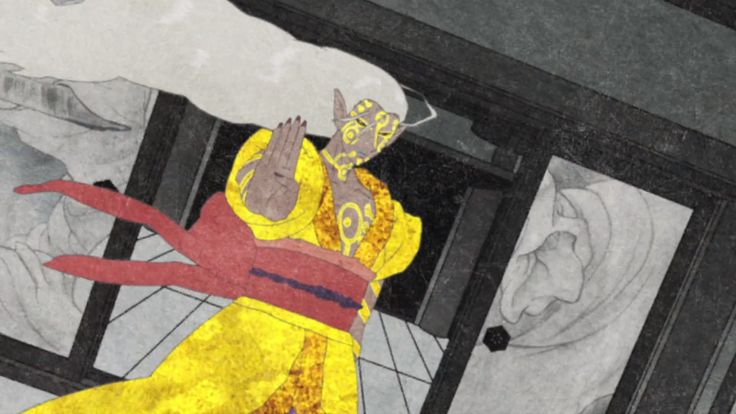

作品評價

座敷童子
豔麗古典浮世繪畫風，融合現代技法的新日本怪談。
身懷六甲的女子在雨夜前來，急急敲門哀求，旅館老闆娘冷漠以對。大雨落下的聲音與急促尖鋭的哀求聲，利落自然地將懸疑緊張的氛圍導入劇中，旅店老闆娘未伸出援手，將現代人不想招惹麻煩的心態表露無遺。
物怪的形成，都有著令人憐憫的理。在座敷童子背後的事實，是貪圖歡愉的男女激情後留下的證據，他們一來到這世上，卻立即陷入不得不被殺害的命運。延續《怪~ayakashi~》的作畫風格，《怪化貓》以現代高超的動畫技巧表現江户時代浮世繪版畫的生動，利用不常見的和式剪紙方式營造畫面，產生水波紋的感覺，使場景在平衡之下更添加傳説故事常有的虛幻感。主角身後極具生命力的背景，同樣吸引著關注劇情發展的觀眾目光，導演將不想直接説出的劇情添加在色彩豐富的精彩場景之中，讓觀眾可自行想像，這種使用暗喻手法點出故事重點的方法，不僅能清楚交代劇中一些曖昧難言的劇情，更增添觀眾觀看時的樂趣。
《怪化貓》系列比前作《怪~ayakashi~》更加唯美且具藝術性，例如：從天而降如花一般的雨滴、色彩繽紛轉動的油紙傘以及旅館裏的一景一物等，完美襯托著劇情的發展。
此外，以顏色鮮豔的和式紙門作為切換場景的節點，適時於每個段落間一開一合，搭配簡短有力的聲效節奏，用簡單的手法交待場景轉換，觀眾也可一目瞭然。除了場景之外，人物的穿著及誇張的臉部表情也是本作特色之一，為時而緊湊時而懸疑的劇情，添加了一些喜感，而在這系列動畫中的賣藥郎，情緒及表情也較在《怪~ayakashi 化貓》中，來得豐富且俏皮。

海坊主
浮世繪般的海洋與風，2D場景表現動態畫面展現屬於《怪化貓》的浮華之海。
《怪化貓》第二卷，發生在前往江户的大型商船空栗鼠丸號上。故事一開始，先以説書人的口吻講述日本傳統的海怪傳説，鋪陳接下來的詭異氣氛。劇中眾人皆因要前往北方的江户而聚於同一艘船上，但卻無故偏離航道，讓眾人紛紛討論起眼前看到的怪異現象。隨即，上空傳來妖怪虛空太鼓的擊鼓聲，彷佛向眾人宣告，已進入人稱龍三角的妖怪之海，詭譎之事也接踵而來。人的弱點就在於害怕被別人看穿心中不願洩露的秘密。
物怪的攻擊，卻讓人不得不去面對內心深層的恐懼；即使不願説出，意志也會被物怪看透而無所遁形。
整個故事主軸為你情我願的男女之情，揉合無法跨越的道德尺度，交織出狠心犧牲摯愛親人的自私念頭，但如此私心，最終將化做一條名為恐懼的長鞭，日夜不停鞭笞著人心，甚至形成無法控制的物怪，挖掘出最黑暗卻不得不面對的醜陋面貌。除了張力十足的劇情之外，最值得一提的是，在《怪~ayakashi~化貓》裏登場的少女－加世，也在本篇登上空栗鼠丸成為乘客，是本系列作中，除了賣藥郎外，唯一一個重複出現的配角。
前往江户尋找新工作的加世，不改其率直開朗的本性，以特殊的方式出現在海坊主的故事中，為詭異的氣氛帶來許多有趣的話題與橋段。
鵺
黑白水墨構成的世界，色彩運用的極致表現。
香道、茶道及花道被稱為日本三大文化，本篇故事以聞香為主題，透過這種貴族活動，影射上流社會勾心鬥角、階級分明及貪婪自私的心態。聞香是種極盡風雅的娛樂，利用嗅覺鑑賞香木之芳香，分辨其微妙不同，因此必須聚精會神感受其中奧妙，是一種非常需要功力與學習的活動，現為一門專精獨特的文化，是謂香道。
香道、茶道及花道被稱為日本三大文化，本篇故事以聞香為主題，透過這種貴族活動，影射上流社會勾心鬥角、階級分明及貪婪自私的心態。聞香是種極盡風雅的娛樂，利用嗅覺鑑賞香木之芳香，分辨其微妙不同，因此必須聚精會神感受其中奧妙，是一種非常需要功力與學習的活動，現為一門專精獨特的文化，是謂香道。
故事中，人人都想得到的蘭奢待，相傳是皇室珍品，為天下第一名香，因此被保存在東大寺裏，而《鵺》即是以這稀世真品做為故事的出發點，發展出極具《怪化貓》風格卻又傳揚日本香道的有趣故事。
下雪的冬季裏，畫面上的景物幾乎被白雪覆蓋。以一種天然的冷製造出不尋常的氛圍。院子若大的迴廊，建構出大户人家宅邸的深幽與寬廣，但除了參賽者與賣藥郎之外皆無人出沒的院落，又似乎太死氣沉沉，雖然下雪已令人感覺寒冷，但空曠的環境加上為數極少的人物，更為此篇增添一股沒由來地寒意。
古人有云：眾口鑠金，《鵺》一篇即以這個中心思想出發，故事中參與聞香比賽的四人皆為聞名天下的蘭奢待而來，貪婪狂妄且不自量力，因而至死都被物怪玩弄於股掌之間，而將眾人自物怪之手解放，即為此次賣藥郎的目的。畫面幾乎僅運用黑灰白三種色調來構成大部份的場景，不僅暗示那是一個無人之地，亦營造出停留在虛幻世界之感。不過，到了表達聞香者對所聞香氣的感動時，卻又以全綵畫面呈現，企圖完整傳達聞香後所產生的意境。可謂是色彩運用的極致表現。
無顏怪
人的臉只是外在表象 面具下的真面目才是最真實的自我。
這是一個如莊周蝴蝶夢般唯美的故事，除了主角賣藥郎外，導演安排了日本傳説中會奪人臉孔的無顏怪做為另一主角。
本段故事特別以戲劇的方式，回顧了阿蝶的一生，藉由第一幕、第二幕、第三幕的演出一步步挖掘出真相，也將如在夢中的阿蝶拉回現實。本卷是以愛為主題，無顏怪愛上氣質出眾的阿蝶，即使知道人類與物怪無法結合，卻不忍看她受苦而一次又一次出現在她身邊，最後甚至借她力量殺害其丈夫一家；而深愛自己母親的阿蝶，從小為了討母親歡心，屢次犧牲自我，當個聽話的女兒。
兩種不同層次、不同面向的愛，卻聯手造就了阿蝶可悲的一生。自殺後卻認為自己殺了丈夫一家的阿蝶，內心世界所欠缺或是被忽略的部份，正是這次故事的主軸，劇中總是一臉茫然的阿蝶，自始至終都活在夢境中，直到賣藥郎讓她看見年幼時的自己，還有因情感與關係而被忽略甚至忘記的心情，才如夢初醒，而將這些扭曲再次導正，即是賣藥郎這次的任務。
承襲《怪化貓》一貫擅用場景暗喻的獨特手法，《無顏怪》一卷以屏風作為敍述及暗喻的媒介，屏風上飲酒作樂的武士一家，搭配諷刺性的輕蔑言語，對照阿蝶的愁容，形成一種強烈的反差，成功塑造出阿蝶難以融入的權貴世界。為了表現阿蝶嚮往的自由，無顏怪帶着阿蝶逃到有如桃花源的綺麗樹林中，場景遂轉換為猶如夢境般柔美的世界，粉色系營造出的畫面、不時飄着花瓣雨的場景、搭配輕脆的雲雀叫聲，製造出一種飄然的空靈，也宛如反映阿蝶的期望。
人物設計上，本卷以不同面具來表達人物的喜怒哀樂，切合主題中所提到的人的臉只是外在的表徵，也因此無顏怪雖然沒有真實的臉孔，卻能利用不同神情的面具來表達自身情緒。反之，阿蝶雖然沒帶上面具，但所呈現的臉孔卻不是其真面目。此外，除了賣藥郎及阿蝶外，所有存在於阿蝶一生中的過客，全都未現出臉孔，有的帶上面具而有的則是以和紙貼住，製造出一種詭異的感覺，卻又十分切合無顏這個主題。
化貓
《化貓》為《怪化貓》全系列的最後一卷故事，也是整部作品的起源之作。
在《怪~ayakashi~化貓》的單元大受歡迎後，製作團隊揹負起觀眾的期望，再次推出跨越好幾個時代的《化貓》，並讓所有的劇中人物轉世，化身為新角色，而賣藥郎也將在新故事中繼續展現魅力。
《怪~ayakashi》中《化貓》的故事背景設定於江户時期，而在《怪化貓》中同名為《化貓》的故事，卻轉換時代背景，來到了充滿浪漫風情的大正時期。在這個與江户時期截然不同的新時代裏，西風漸漸盛行，文化處在一個新舊交接的時期，社會風氣慢慢開放，也形成一種衝突性的美感。最明顯的一點在於人民的穿著與前面幾卷非常不同，有的穿和服，女性也開始出現中性或較時髦的打扮，而具有身份地位的人會以西化的裝扮出現，形成一種強烈的反差，而賣藥郎的奇特服裝，剛好揉合了兩個世代的特點，因此相當顯眼卻不突兀。
隨著社會氣氛逐漸西化，女性亦獲得思想上的解放，也因此本片的女性角色能夠自由工作，不若江户時期的女性，總是淪為男人的玩物，完全無法掌握自身的命運。新女性的出現，與根深蒂固於傳統男性心中的思維，這兩種時代產物造成許多新職業、景象及衝突出現，也使許多法律、階層間出現灰色地帶，這也是造成本卷悲劇的主因。
《化貓》的場景來到正慢慢進入現代化生活的大正時期，因此出現大量的西洋建築及物品，這也是本卷與前面幾個故事最大的不同點。除了不變的人物畫風及既有的驚悚氣氛外，劇組人員一開始即營造出充滿新希望及社會正在起步的感覺，企圖在場景中給觀眾全新的感受。
本卷最特別的地方也在於許多人潮眾多的場景部分，首次以假人表現人羣的手法展現，不僅符合時代背景亦充分表現出詭異的喧囂熱鬧之感，一羣穿上西服的模特兒模型，肢體僵硬且面無表情，再配上宛如罐頭人聲來製造喧鬧的感覺，鋪陳出屬於《怪化貓》的詭譎氣氛，而在車廂中出現的人物，也多采用這種特殊表現手法。
故事中，火車是很重要的元素，因此場景大部份也鎖定在火車的車廂內。雖然這是一個狹隘的空間，然而仔細觀看影片，亦不難發現，製作團隊善用了車廂所具備的設施及特性，創造出壓力高度濃縮的空間，將火車這項元素髮揮得淋漓盡致，也可説是本卷故事最成功的地方。
綜述
《怪化貓》的畫風在動漫作品中可謂獨樹一幟，過目不忘。
畫面有着浮世繪華麗的風格，平塗、絢麗的色彩和紋飾，具有裝飾性的風、雨、水以及平面化的人物。初看《怪化貓》，會被它鮮豔的畫面閃得好似真不開眼，看不真切。習慣之後，就會則覺得很有韻味。另外，櫻井孝宏的配音非常給力，能劇一般的念詞和畫面定格很帶感。